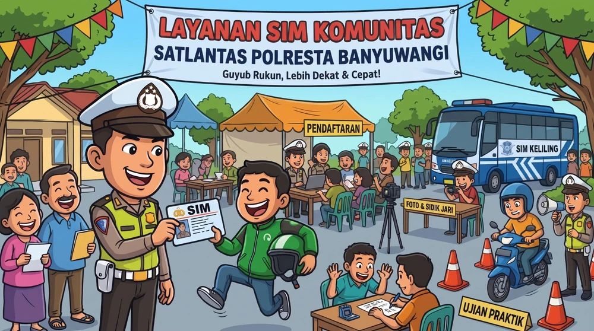
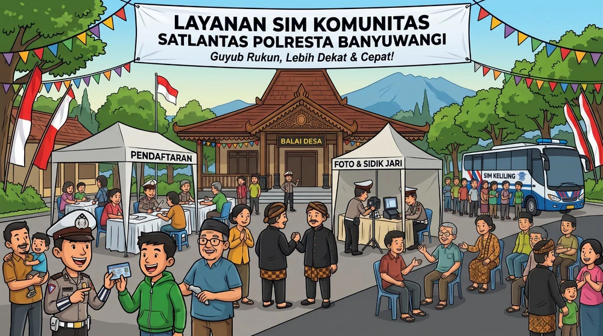
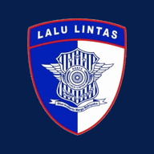

Layanan berikutnya
Memuat jadwal…
–hari
–jam
–menit
SIM Komunitas · Khusus Perpanjangan · Satpas Polresta Banyuwangi
Petugas datang ke pesantren, kampus, sekolah, dan desa Anda. Daftar dari HP, datang di hari layanan, dan pulang dengan SIM jadi.
Perpanjangan SIM A & SIM C dilayani langsung di wilayah Anda. Daftar dari HP, bawa SIM lama yang masih berlaku, tanpa ujian teori dan praktik.



Buka lebih cepat dari layar utama seperti aplikasi, dan tetap bisa melihat jadwal, ketentuan, dan latihan soal saat sinyal lemah.
Memuat jadwal…
Jadwal SIM Komunitas periode ini sudah selesai. Info jadwal berikutnya lewat WhatsApp Satpas 0852-3390-0100.
Belum ada jadwal di dekat Anda? 📍 Usulkan lokasi Anda
Pengurus pondok pesantren, kampus, sekolah, desa, atau instansi bisa mengusulkan lokasi. Usulan masuk langsung ke petugas Satpas, lalu Anda dihubungi lewat WhatsApp untuk mengatur jadwal.
Jawab 3 pertanyaan, langsung tahu jenis pendaftaran yang tepat, berkas yang dibawa, dan biaya resminya. Data tidak dikirim ke mana pun.
Siapa yang boleh ikut, 4 persyaratan penerbitan SIM, berkas yang dibawa, ketentuan perpanjangan, ujian ulang, biaya resmi, dan dasar hukum — Perpol No. 5/2021 jo. Perpol No. 2/2023. 3 halaman A4, siap dicetak.
Sudah mengisi formulir? Lihat apakah data Anda masuk kuota, dan hasil ujian teori yang sudah dicek petugas.
Sudah mengisi formulir? Lihat apakah data Anda masuk kuota, masa berlaku SIM lama, berkas yang dibawa, dan jadwal datang.
Ujian teori SIM memakai E-AVIS dan dapat dikerjakan lewat HP. Kenali tahapannya, lalu berlatih dengan soal dari Buku Digital SIM Satpas Banyuwangi.
Mengenali potensi bahaya di jalan dan bereaksi dengan tepat.
Menyesuaikan diri saat berkendara demi keselamatan dan ketertiban.
Dasar dan norma hukum lalu lintas yang berlaku.
Nilai lulus paling rendah 70 (Pasal 15 Perpol 5/2021). E-AVIS dapat dikerjakan pada perangkat Satpas atau gawai milik pemohon (Pasal 14 ayat 2 Perpol 2/2023). Peserta SIM Komunitas: setelah ujian, simpan screenshot hasilnya lalu kirim lewat tombol Kirim bukti teori di menu Jadwal.
Latihan, bukan ujian resmi.
Simulasi E-AVIS 65 soal dengan hitung mundur, e-book, dan video materi ada di Buku Digital.
Pelajari urutan materi dan syarat lulus ujian praktik sesuai Kep/105/VIII/2023 dan Buku Digital SIM (B.13), lalu uji pemahaman Anda dengan kuis lulus atau gagal.
Latihan ini untuk memahami urutan dan aturan, bukan pengganti latihan berkendara. Ujian praktik SIM Komunitas dilaksanakan di lapangan uji yang disiapkan di lokasi.
Tidak, selama SIM lama masih berlaku. Peserta cukup membawa KTP-el, SIM lama asli, dan bukti JKN aktif, lalu mengikuti tes kesehatan & psikologi di lokasi. Golongan yang dilayani: SIM A dan SIM C.
Warga yang berdomisili di Banyuwangi (sesuai KTP), berusia minimal 17 tahun untuk SIM C dan SIM A, dan termasuk komunitas sasaran: santri & pengurus pondok pesantren, mahasiswa & civitas kampus, siswa SMA sederajat yang cukup umur, atau masyarakat desa di lokasi layanan. Unduh ketentuan lengkap (PDF).
Pendaftaran gratis. Yang dibayar hanya PNBP resmi (PP No. 76 Tahun 2020) di loket resmi/BRIVA: SIM C baru Rp100.000, SIM A baru Rp120.000, perpanjangan SIM C Rp75.000, perpanjangan SIM A Rp80.000. Biaya tes kesehatan dan psikologi mengikuti ketentuan petugas di lokasi. Jangan membayar ke perorangan.
Tidak. SIM yang sudah lewat masa berlaku harus diajukan sebagai SIM Baru, termasuk ujian teori dan praktik. Gunakan Cek Syarat untuk memastikan.
Tetap kirim screenshot hasilnya. Petugas akan menjelaskan jadwal ujian ulang. Setelah ujian ulang, kirim lagi hasil terbaru dengan nomor WhatsApp yang sama; bukti lama otomatis diganti.
Data baru tampil sekitar 5 menit setelah formulir dikirim. Pastikan NIK dan tanggal lahir sama persis dengan yang diisi di formulir. Bila masih tidak ada, hubungi WhatsApp Satpas.
Pilih lokasi lain yang masih tersedia, atau datang langsung ke Satpas Polresta Banyuwangi pada jam pelayanan. Jadwal SIM Komunitas berikutnya diumumkan lewat halaman ini dan WhatsApp Satpas.
WhatsApp Satpas Polresta Banyuwangi · 0852-3390-0100